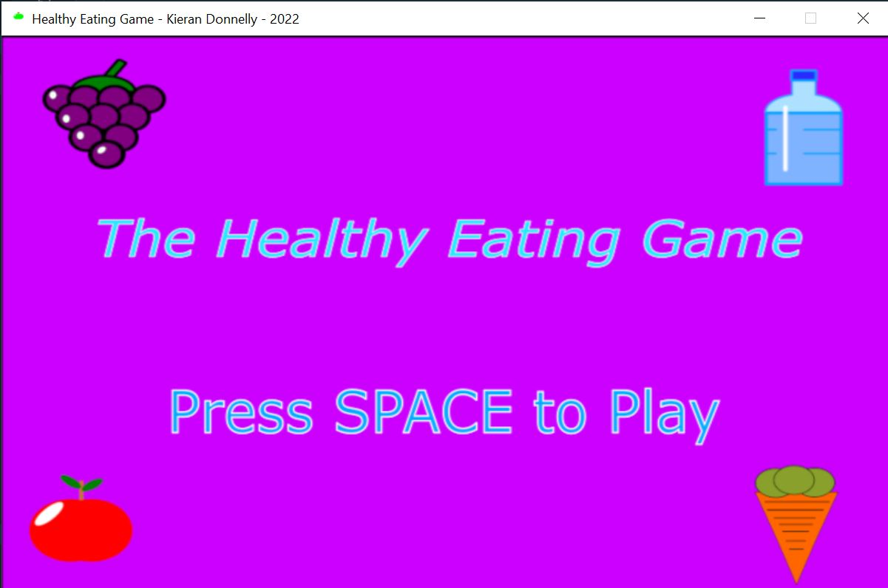
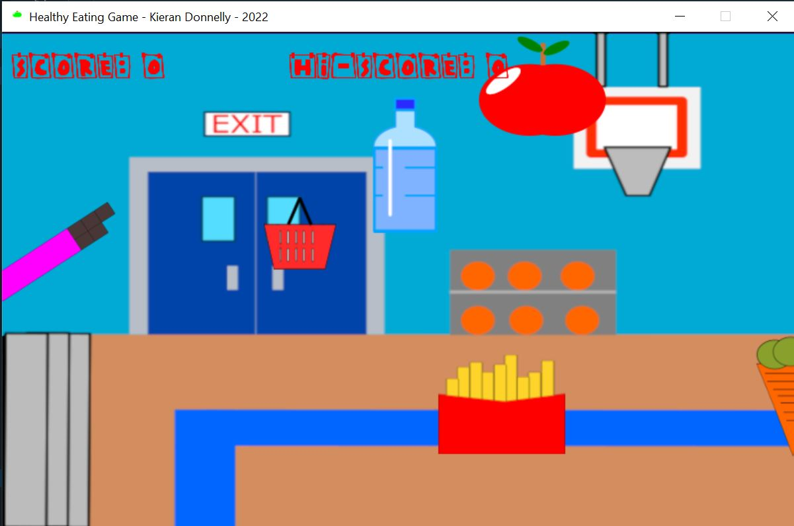
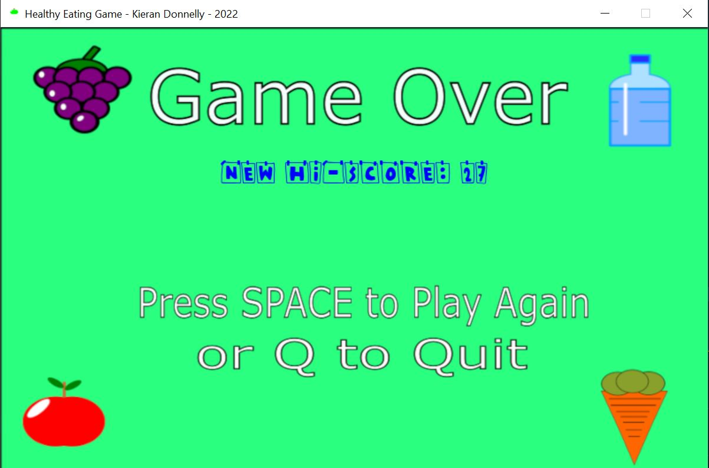

Kieran's Project
I was given the task of designing a game based on healthy eating
was to target young school children,
The game “Healthy Eating Pygame” was designed and brought together using the coding language python Visual Studio.
The objective of the game is to collect all the healthy foods
each one collected earns the player a certain amount of points,
whilst doing this they must avoid clicking the unhealthy foods which will inflict negative points on the total score,
this is to help show the idea that healthy foods will benefit young children and the unhealthy snacks will not.


